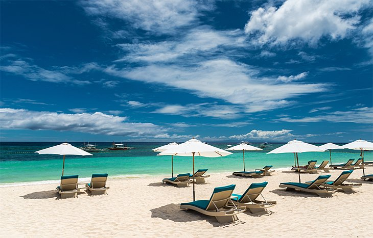

Alona Beach
Bohol

Kayangan Lake
Coron-Palawan

Philippine History
Ferdinand Magellan first landed in the Philippines in 1521. The name Philippines comes from Philip II who was the king of Spain during the 16th century when the country became a Spanish colony. The Philippines was granted to the United States in 1898 following the Spanish-American War. In 1935 the Philippines became self-governing, but their independence was delayed by World War II and the invasion of Japanese troops. The islands were liberated by
U.S. forces in 1944-45, and the Republic of the Philippines was proclaimed in 1946, with a government patterned on that of the United States. In 1965 Ferdinand Marcos was elected president. He declared martial law in 1972, which lasted until 1981. After 20 years of rule, Marcos was driven from power in 1986. Corazon Aquino became president and instituted a period of democratic rule in the country.
Bohol
Coron-Palawan
Why Philippines is called Home of Beautiful Beaches?
The Philippines is made up of 7,641 islands, making it one of the largest archipelagos in the world. But more than 5,000 of the islands remain unnamed on most international maps. Any self-proclaimed lover of the sand, sea, and sun will inevitably fall for the Philippines. Over 7,000 islands strong, the Philippine archipelago is studded with some of the most amazing beaches and waters in the world. In recent years, this tropical paradise has boomed in popularity among foreign travellers.
Surrounded by tropical islands, immaculate rice terraces, volcanoes, and pristine beaches, it is no wonder the Philippines made the cut as one of the World’s 50 Most Beautiful Countries. The stunning Southeast Asian archipelago offers endless opportunities for sightseeing for tourists and natives alike. With world-class surfing and the opportunity to swim with wildlife such as sea turtles, the water surrounding the Philippines is as big a draw for tourists as the islands’ natural beauty.
Beach lovers should pin the Philippines at the top of their travel lists, firstly because the sheer number of beaches in the country is dizzying. Of course, some are better than others, but most are beautiful and absolutely worth the visit.